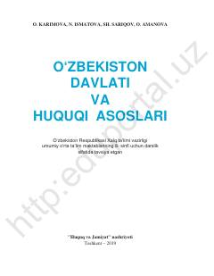

OD8-sinf o‘quvchilari uchun O‘zbekiston davlati va huquqi asoslari bo‘yicha darslik.
Ushbu darslik umumiy o‘rta ta’lim maktablarining 8-sinf o‘quvchilari uchun mo‘ljallangan bo‘lib, O‘zbekiston Respublikasi davlat tuzilishi va huquqiy asoslarini yoritib beradi. Kitobda inson huquqlari, davlat ramzlari, qonun ustuvorligi va fuqarolik jamiyati tushunchalari batafsil tushuntirilgan.